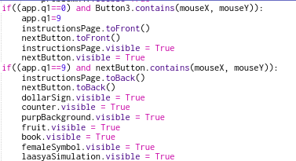
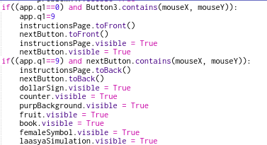

This project is, essentially, an informational slideshow that teaches the user about quality education. The player must avoid the scanning police officers and reach the end for a sweet reward. As a bonus, the player can collect extra bonus coins to boost their victory.
What Did I Learn? What Does It Show?
For this project, we were given the option to choose what kind of project we wanted to do, which was a great opportunity for me to explore my creativity, as well as figure out how to incorporate CS concepts and ideas. I worked on the game and "the problem" sections, and I enjoyed being able to work creatively on this project.
How was it created
This project was primarly created through several conditionals and onStep. All of the elements we have covered throughout this entire semester were, in one way or another, incorporated into thsis project. onMousePress was also essential to both my partner's and I's games, and involved using various conditionals to ensure smooth navigation. Additionally, we used contains with onMousePress for our games in order to give the impression of "buttons", which gave off a clean look, but resulted in some problems. One of the ways we did that was to use a custom property called app.q1, which was set to a different value for every page. This way, a page would not pop up when it was not supposed to, if a user accidentally clicked near that button. We also used toFront and toBack extensively, as well as visibility, to switch through pages and ensure there were no bugs.
 
